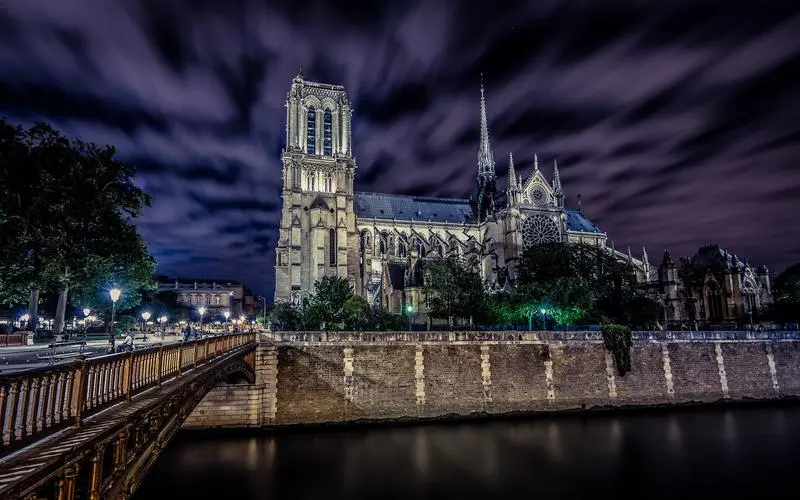
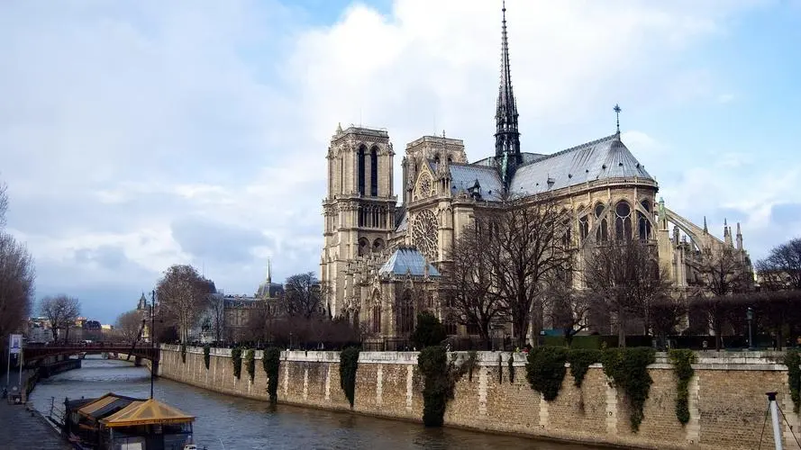

Venice
Located in northeastern Italy, Venice is a city steeped in romance and historical allure, often hailed
as the "City of Water." Comprising 118 small islands connected by hundreds of bridges, strolling through
Venice feels like stepping into another realm. Renowned for its unique network of waterways, the city's
beautiful canals weave between ancient buildings while boats gently navigate the water, painting a
captivating picture.
Venice boasts a distinctive architectural style, exuding the charm of the Renaissance and Gothic periods.
Piazza San Marco stands as the city's centerpiece, featuring the magnificent St. Mark's Basilica and the
Doge's Palace, showcasing opulent Byzantine influences and an array of artistic treasures. Wandering through
the narrow streets reveals exquisite artisan shops and delectable street food stalls, offering a chance to
savor the local culinary delights and immerse yourself in the city's enchanting ambiance.
Venice

Budapest
Nestled along the Danube River, Budapest, Hungary's capital, earns its reputation as the "Paris of the East."
This city enchants visitors with a stunning blend of architecture, a rich historical tapestry, and the
soothing embrace of natural thermal springs. Divided into Buda and Pest by the Danube, each side offers its
own unique charm.
Buda, crowned by the grand Buda Castle, boasts historic hills and captivating sites like Matthias Church and
Fisherman's Bastion. Across the river in Pest, vibrant culture thrives, showcased by the magnificent
Parliament Building and a bustling contemporary scene.
The city's allure extends to its famous thermal baths like Széchenyi and Gellért Baths, where relaxation
meets architectural grandeur. Budapest's cultural vibrancy emanates from its theaters, galleries, and unique
ruin pubs, blending history with modern life.
With its captivating sights, savory cuisine, and a rich cultural heritage, Budapest warmly invites visitors
to immerse themselves in its captivating ambiance.
Budapest
The Alps
The majestic Alps, stretching across several European countries including France, Switzerland, Italy,
Germany, Austria, and Slovenia, stand as one of the world's most iconic mountain ranges. Renowned for
their breathtaking beauty and natural grandeur, the Alps offer a diverse tapestry of landscapes, from
snow-capped peaks to lush valleys and crystal-clear lakes.
These mountains provide a haven for outdoor enthusiasts, offering a plethora of activities year-round.
Winter invites skiers and snowboarders to its renowned slopes and resorts, while summer beckons hikers
and climbers to explore its stunning trails and peaks.
The region's charm extends beyond its natural splendor. Charming Alpine villages dot the landscape,
preserving centuries-old traditions and cultures. Visitors can savor hearty mountain cuisine, explore
historic towns, and immerse themselves in the warmth of local hospitality.
Moreover, the Alps serve as a vital ecological treasure trove, harboring diverse flora and fauna,
including rare and endangered species. This ecosystem not only captivates nature lovers but also
emphasizes the importance of conservation efforts to protect these stunning mountains for generations
to come.
The Alps
Paris
Paris, often hailed as the "City of Light," exudes an unparalleled aura of romance, culture, and timeless
allure. Nestled gracefully along the Seine River, Paris stands as a global icon, captivating visitors with
its enchanting beauty and rich historical tapestry.
At the heart of this splendid city lies the grand Notre-Dame Cathedral, an architectural marvel steeped in
Gothic history. Dominating the skyline, the iconic Eiffel Tower offers panoramic views that adorn the city's
breathtaking landscapes. Paris is an open-air gallery, boasting world-renowned art institutions like the
Louvre, home to the enigmatic Mona Lisa, and the Musée d'Orsay, a treasure trove of Impressionist
masterpieces.
Wandering along the Seine's tranquil banks or through charming districts such as Montmartre and Le Marais
reveals Paris's vibrant street life, bustling markets, and inviting cafés. The city's culinary scene is a
delightful journey, from the aroma of freshly baked pastries in cozy patisseries to Michelin-starred dining
experiences that tantalize the taste buds.
Paris isn't just a city—it's an emotion—a captivating blend of romance, culture, and sophistication that
continuously enchants all who walk its storied streets.
Paris


Nice
Nestled along the captivating French Riviera, Nice stands as a jewel of the Mediterranean, captivating
visitors with its azure waters, vibrant streets, and timeless elegance. The city boasts a stunning
coastline with pebble beaches bathed in sunlight, inviting travelers to relax by the gentle lapping of
the sea.
The Old Town, known as Vieux Nice, is a labyrinth of narrow streets bursting with character, adorned with
colorful buildings and charming cafés. The scent of freshly baked pastries drifts through the air,
tempting passersby to indulge in delectable treats.
Promenade des Anglais, the city's iconic waterfront promenade, offers panoramic views of the Mediterranean
Sea and is a favorite spot for leisurely strolls or cycling along the palm-lined avenue.
Art and culture thrive in Nice, with world-class museums like the Musée Matisse and the Marc Chagall
National Museum showcasing exquisite collections. The city's vibrant markets, such as the Cours Saleya
Flower Market, offer a sensory delight, brimming with local produce, flowers, and handicrafts.
Nice is a harmonious blend of sophistication and laid-back charm, inviting travelers to immerse themselves
in its Mediterranean allure, savor its culinary delights, and bask in the beauty of this coastal paradise.
Nice
Provence
Provence, a region in southeastern France, exudes an enchanting blend of natural beauty, historic charm,
and artistic allure. This idyllic area is renowned for its captivating landscapes, vibrant culture, and
timeless traditions.
The rolling lavender fields of Provence, particularly in areas like Valensole, create a mesmerizing purple
tapestry that stretches as far as the eye can see, offering a sensory feast during the blooming season.
The region's picturesque vineyards, producing exquisite wines, dot the countryside, inviting visitors to
savor their exquisite flavors.
Historical towns such as Avignon, Arles, and Aix-en-Provence are adorned with ancient architecture, Roman
ruins, and quaint cobblestone streets. Avignon's Palais des Papes and Arles' Roman Amphitheatre stand as
magnificent testaments to the region's rich history.
Provence has inspired countless artists, including Vincent Van Gogh and Paul Cézanne, with its luminous
light and vibrant colors. The region's bustling markets, like the one in Aix-en-Provence, brim with local
produce, artisanal goods, and the fragrant scent of lavender and herbs.
The allure of Provence lies in its harmonious blend of scenic beauty, cultural richness, and artistic
heritage, captivating travelers seeking a taste of authentic French countryside living.
Provence